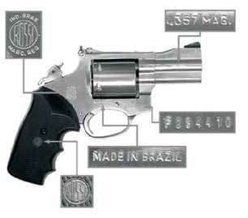
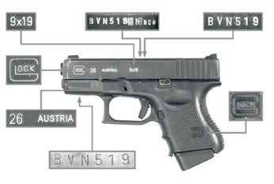
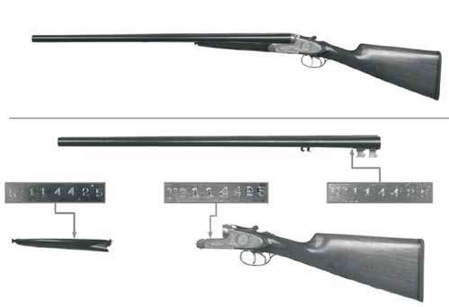

ARMA 1
| 1) Classificação: | Revólver; |
|---|---|
| 2) Marca: | Rossi (Amadeo Rossi do Brasil, Brasil); |
| 3) Modelo: | 712; |
| 4) Calibre: | .357” MAG (trezentos e cinquenta e sete centésimos de polegada, Magnum); |
| 5) N° de Série: | F 094410 (éfe, zero, nove, quatro, quatro, um, zero); |
| 6) N° e Sentido das Raias: | 6-D (seis raias dextrógiras); |
| 7) Comprimento do Cano: | Cano medindo 6,4cm (seis centímetros e quatro décimos); |
| 8) Acabamento: | Em aço inoxidável, encontrando-se em excelente estado de conservação; |
| 9) Massa: | 906g (novecentos e seis gramas) com o tambor vazio; |
| 10) Carregamento: | tambor com 6 (seis) câmaras, abertura lateral para a esquerda e giro no sentido anti-horário; |
| 11) Coronha: | Guarnecida por empunhadura de borracha, com super fícies zigrinadas, com logotipo do fabricante incrustado; |
| 12) Mecanismo de -dis paro: | Percussão central direta, com pino percussor articulado alojado no cão, acionamento por ação simples e dupla, funcionando normalmente. |

Figura 61 – Fotografia, referente ao descrito no item ARMA
01, ilustrando a lateral direita, com detalhes da marca, pro cedência, calibre e número de série. (Foto: Marcelo Jost.) ARMA 2
| 1) Classificação: | Pistola; |
|---|---|
| 2) Marca: | Glock (Glock Inc., Áustria); |
| 3) Modelo: | 26; |
| 4) Calibre: | 9 mm Luger (nove milímetros, Luger); |
| 5) N° de Série: | BVN519 (bê, vê, êne, cinco, um, nove), estando presente no cano, ferrolho e armação; |
| 6) N° e Sentido das Raias: | 6-D (seis raias dextrógiras); |
| 7) Comprimento do Cano: | Cano e câmara medindo 8,5cm (oito centímetros e cinco décimos); |
| 8) Acabamento: | Ferrolho e cano em aço oxidado, apresentando leve desgaste da oxidação nos cantos vivos do ferrolho, como a parte frontal do cano e alça de mira; armação em material polimérico de coloração preta; a pistola encontra-se em bom estado de conservação; |
| 9) Massa: | 550g (quinhentos e cinquenta gramas) sem o carre- gador; |
| 10) Carregamento: | Carregador com capacidade para 10 (dez) cartuchos; |
| 11) Coronha: | Em material sintético preto com o símbolo do fabricante gravado de ambos os lados; |
| 12) Mecanismo de disparo: | Percussão central direta, com pino percussor alojado no ferrolho, acionamento apenas por ação simples, funcionando normalmente. |

Figura 62 – Fotografia, referente ao descrito no item ARMA 02,
ilustrando a lateral esquerda, com detalhes do calibre, marca, modelo e numeração de série. (Foto: Marcelo Jost). ARMA 3
| 1) Classificação: | Espingarda; |
|---|---|
| 2) Marca: | AYA (AYA, Aguirre y Aranzabal, Espanha); |
| 3) Modelo: | N.º 53; |
| 4) Calibre: | 12-70; |
| 5) N° de Série: | 114425 (um, um, quatro, quatro, dois, cinco); |
| 6) N° e Sentido das Raias: | Canos de alma lisa; |
| 7) Comprimento do Cano: | Canos e câmaras medindo 700mm (setecentos milímetros); |
| 8) Acabamento: | Em aço oxidado, encontrando-se em perfeito estado de conservação; |
| 9) Massa: | 3285g (três mil e duzentos e oitenta e cinco gramas), desmuniciada; |
| 10) Carregamento: | Carregamento manual, efetuado diretamente nas câmaras de combustão, por meio de basculamento do cano; |
| 11) Coronha: | Em madeira, com empunhadura texturizada e soleira de borracha; |
| 12) Mecanismo de disparo: | Percussão central direta, com pinos percussores alo- jados no interior da armação, armados por meio do basculamento do cano, ambos funcionando normal mente, somente em ação simples. |

Figura 63 – Fotografia, referente ao descrito no item ARMA 03, ilustrando a lateral esquerda,
com detalhes da numeração de série. (Foto: Marcelo Jost).
Abaixo estão listados os reagentes, com suas respectivas composições, utili zados para revelação de caracteres em diversos metais. Alguns metais possuem mais de um tipo de solução reveladora, as quais são geralmente utilizadas indi vidualmente, em função das características da superfície a ser tratada, conforme a especificação de cada mistura reveladora. AÇO-CARBONO ou TITÂNIO Reagente de HATCHER (brando):
Reagente de HATCHER (agressivo) para armas em mau estado: 120 ml de ácido clorídrico concentrado;
Reagente de HATCHER (variante) para armas novas: 40 ml de ácido clorídrico concentrado;
AÇO INOXIDÁVEL Reagente de BESSEMAN & HAEMERS (brando): 120 ml de ácido clorídrico concentrado;
Reagente de BESSEMAN & HAEMERS (agressivo): 120 ml de ácido clorídrico concentrado;
ALUMÍNIO E SUAS LIGAS Reagente de KELLER (brando), também denominado reagente de Potervin & Bastien:
Reagente de TUCKER (agressivo): 15 ml de ácido fluorídrico;
Reagente de HUME ROTHERY: 200 g de cloreto cúprico;
COBRE E SUAS LIGAS
Cartucho íntegro de pistola: um (01) cartucho íntegro de munição de arma de fogo, marca MRP (Magtech Recreational Products, fabricada pela CBC - Companhia Brasileira de Cartuchos), calibre .40” S&W (quarenta centésimos de polegada, Smith & Wesson), com cápsula de espoletamento dourada original CBC (Companhia Brasileira de Cartuchos, Brasil) e projétil encamisado cônico-truncado. Cartuchos íntegros de espingarda: uma (01) caixa de munição, devidamente identificada por meio dos caracteres impressos [sic] “25 CARTUCHOS … CALIBRE 12 … CBC”, contendo dezenove (19) cartuchos íntegros de munição de arma de fogo calibre 12, 70mm (doze setenta milímetros), confeccionados em material plástico de coloração vermelha, da marca Cruzeiro (fabricado pela Companhia Brasileira de Cartuchos, Brasil), com fechamento estrela, chumbo 3T e cápsulas de espoletamento douradas. Estojo percutido e deflagrado: um (01) estojo percutido e deflagrado de munição de arma de fogo calibre .38” SPL +P+ (trinta e oito centésimos de polegada, SPECIAL, mais pressão mais), marca CBC (Companhia Brasileira de Cartuchos), com cápsula de espoletamento original CBC (Companhia Brasileira de Cartuchos). Projétil de chumbo nu: um (01) projétil de arma de fogo, de liga chumbo, calibre nominal .38” (trinta e oito centésimos de polegada), ou similar, disparado por cano de arma de fogo, apresentando deformações normais de raiamento 5D (cinco raias dextrógiras) e deformações acidentais, caracterizadas pelo amassa mento frontal e posterior do projétil, advindas de impacto contra objeto resistente. Sua massa foi aferida em 9,961g (nove gramas e novecentos e sessenta e um miligramas). Projéteis encamisados: quatro (04) projéteis de arma de fogo ogivais totalmente encamisados (ETOG), com encamisamento de coloração dourada, calibre nominal .380” Auto (trezentos e oitenta milésimos de polegada, Automático), ou similar; disparados por cano de arma de fogo, apresentando deformações normais de raiamento 6D (seis raias dextrógiras) sem, entretanto, apresentar deformações acidentais, com exceção de pequena mossa na parte frontal da ogiva, a qual é comum a todos os projéteis. A massa média dos projéteis foi aferida em 6,12g (seis gramas e doze centigramas), condizente com o calibre nominal .380” Auto (trezentos e oitenta milésimos de polegada, Automático). Encamisamento de projétil: um (01) encamisamento de projétil de arma de fogo, confeccionado em metal de coloração cobre com cobertura metálica de coloração prateada, tanto no interior como no exterior, de calibre nominal 9 mm, Luger (nove milímetros, Luger) ou similar, disparado por arma de fogo, apresentando deformações normais de raiamento 6-D (seis raias dextrógiras) e deformações acidentais, caracterizadas pela reversão dos bordos de expansão, na forma de cogumelo, advindas de impacto contra objeto resistente. Sua massa foi aferida em 1,2408g (um grama e dois mil quatrocentos e oito décimos de milésimos de grama). Fragmento de núcleo de projétil encamisado: um (01) núcleo de projétil de arma de fogo, de coloração cinza metálico, confeccionado de liga de chumbo, apresentando intensas deformações acidentais, advindas de impacto contra objeto resistente, as quais são caracterizadas pela deformação, em forma de cogumelo, da parte frontal do projétil. Encontra-se aderido à parte frontal do projétil um fragmento de material poroso, de coloração creme, similar a tecido ósseo. A massa do fragmento metálico, com o fragmento ósseo aderido, foi aferida em 4,5646g (quatro gramas e cinco mil seiscentos e quarenta e seis décimos de milésimos de grama). O fragmento metálico, acima descrito, encaixa-se perfeitamente no interior do encamisamento, descrito abaixo no item Fragmento 02. Carregador de pistola: dois (02) carregadores idênticos, confeccionados em aço inoxidável, com transportadores de plástico, na coloração preta, e soleiras de plástico, na coloração preta, para o calibre 9 mm PARABELLUM (nove milímetros, PARABELLUM), com capacidade para onze (11) cartuchos de munição, sem identificações externas. Mira ótica: uma (01) mira ótica, marca Bushnell (Bushnell Optical Company, Estados Unidos), com objetiva de 18,0mm (dezoito milímetros), comprimento de 24,8cm (vinte e quatro centímetros e oito décimos), ocular de aumento variável de 3 (três) a 7 (sete) aumentos, botões de regulagem X & Y e trilho universal com 10,50mm (dez milímetros e cinquenta centésimos) para adaptação da mira a armas de fogo. A mira ótica está devidamente identificada com os dizeres [sic] “BUSHNELL (BUSHNELL OPTICAL COMPANY, ESTADOS UNIDOS) … 3X-7X BANNER .22 …18mm JAPAN … W33115”, apresentando, ainda, proteção plástica para objetiva e ocular. Encontra-se funcionando perfeitamente.